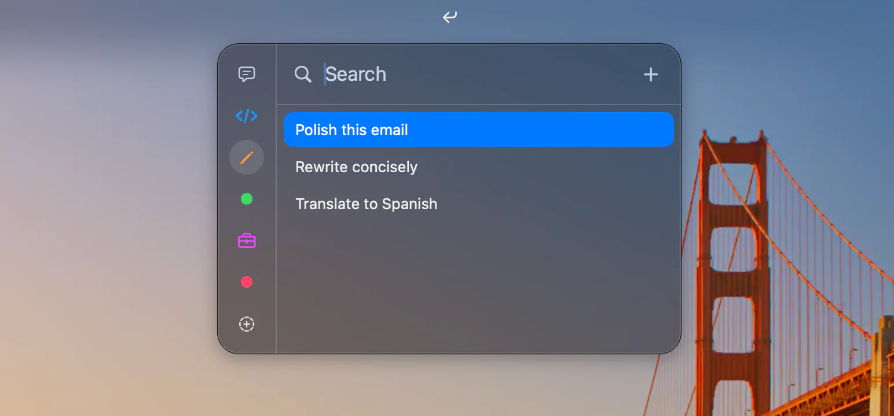
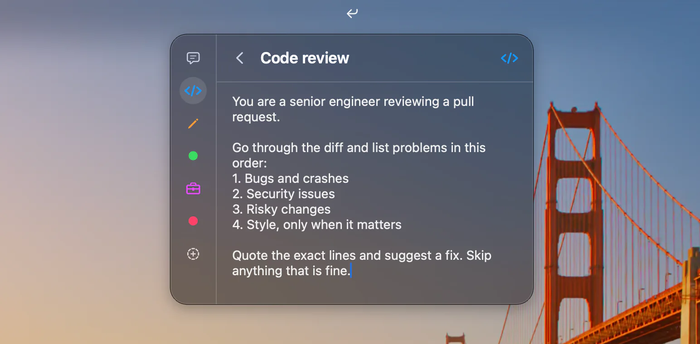

Menu bar panel
Opens with a click or a shortcut, right under the menu bar.
Keep your prompts in the menu bar. Search, press Return, and it pastes where you type.

Small, fast, and out of the way.
Opens with a click or a shortcut, right under the menu bar.
Press Return to paste into the app you were using.
Type a few letters. cdrv finds Code review.
Group prompts. Each category is a dot or an icon.
Search, paste, edit, and switch categories without the mouse.
Delete freely. ⌘Z brings it back.
Import text files. Subfolders become categories.
Your library is one JSON file you can read, back up, or sync.
No account, no analytics. Nothing leaves your Mac.
MIT licensed. Free to use and change.
Titles rank above text. The top match is already selected.
Type a title, a word, or just initials. Press Return to paste.
Click, shortcut, or keys.
Click in the menu bar.
Set a shortcut and open it from any app.
pastes. ⌘ copies. ⌘E edits.

Free and open source.
Free for Mac
Signed and notarized by Apple.
MIT licensed
The code is on GitHub.
Star on GitHubmacOS 26 or newer. Building it yourself also needs Xcode 26 or newer.
To paste for you. It sends one ⌘V to the app you were using. Without it, Outbound copies the prompt and you paste it.
In one JSON file on your Mac: ~/Library/Application Support/Outbound/Library.json. You can read, edit, and back it up.
Yes. Move the file to a synced folder and leave a symlink in its place. Outbound keeps the link.
No. No account, no tracking, no network requests.
Yes. Free and open source under the MIT license.